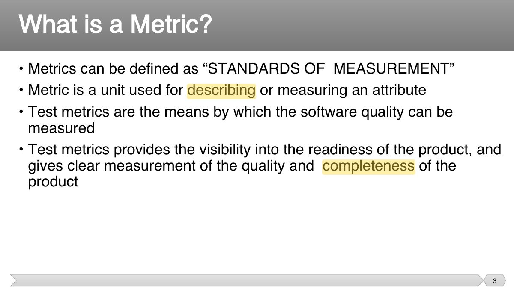
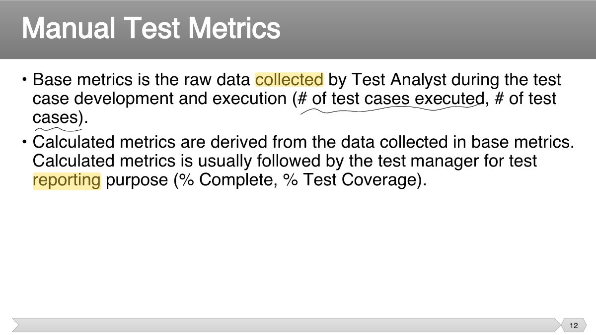
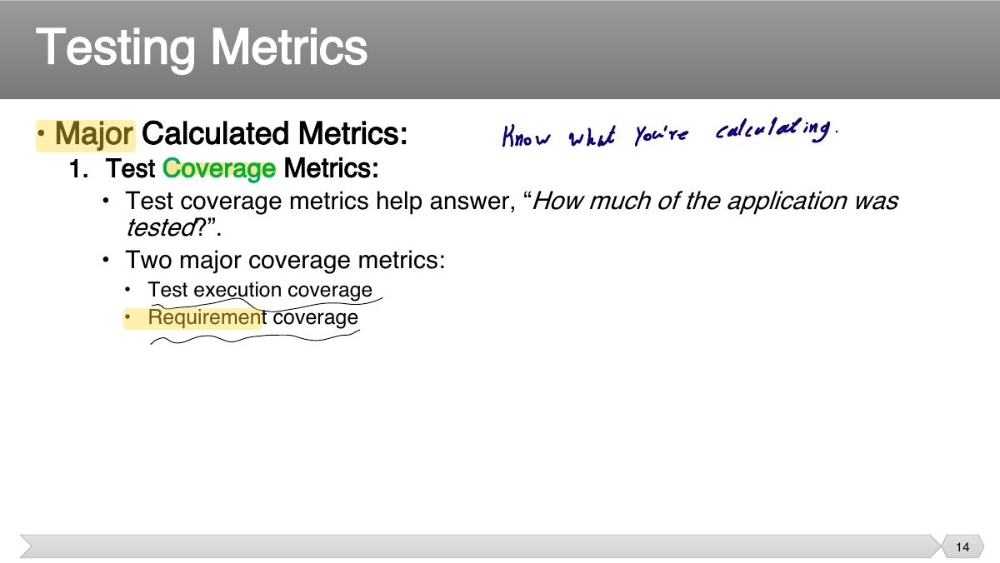
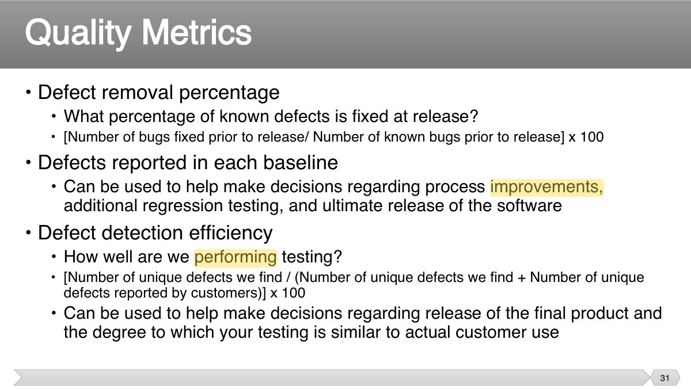
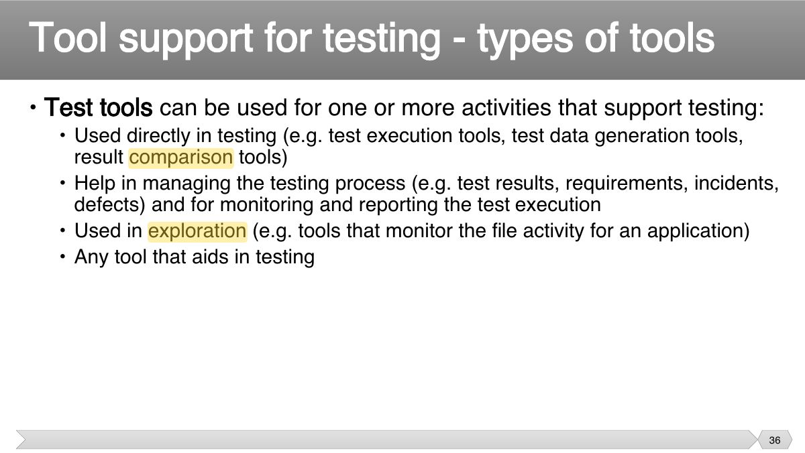
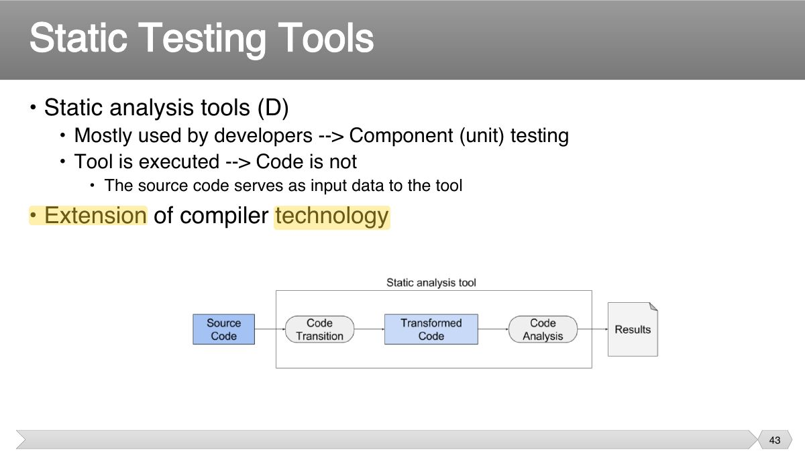

200 test cases, 160 executed, 120 passed. The pass rate of executed tests is:
- 120 / 160.
Why measure testing, base vs. calculated metrics (test-case productivity, execution and pass rates, defect density, defect leakage, defect removal efficiency, coverage), test tool classes (management, static, design, execution, performance, monitoring), benefits and risks of tools, and interview questions on QA vs. QC and verification vs. validation.
Every original slide is shown unchanged. Yellow marks on a slide point to a numbered note: hover or tap a mark to jump to its note, and hover a note to see its marks. Questions tagged Past exam appeared on a real paper; Prediction questions are likely angles, not confirmed. Pick an answer to each question: a wrong pick tells you why it is wrong, so you can try again.

"You cannot improve what you cannot measure": metrics show progress, quality and where to act.

Base metrics: raw counts (test cases written, executed, passed, failed, blocked; defects found). Calculated metrics are derived from them.

Examples: % test cases executed = executed / total × 100; pass rate = passed / executed × 100; defect density = defects / size (KLOC).
200 test cases, 160 executed, 120 passed. The pass rate of executed tests is:

Defect removal efficiency (DRE) = defects found before release / (before + after release) × 100.
90 defects found in testing, 10 found by customers after release. DRE =

Tools support test management, static testing, test design, execution and logging, performance and monitoring.

Static analysis tools (SpotBugs, checkstyle, JDepend) find defects in code without running it.
Test execution tools run scripted tests; harnesses and unit frameworks provide drivers and stubs.
Benefits: less repetitive work, consistency, objective assessment. Risks: unrealistic expectations, underestimated effort, over-reliance on the tool.
Stop testing when exit criteria are met: coverage, defect rates, deadlines, budget, acceptable residual risk.